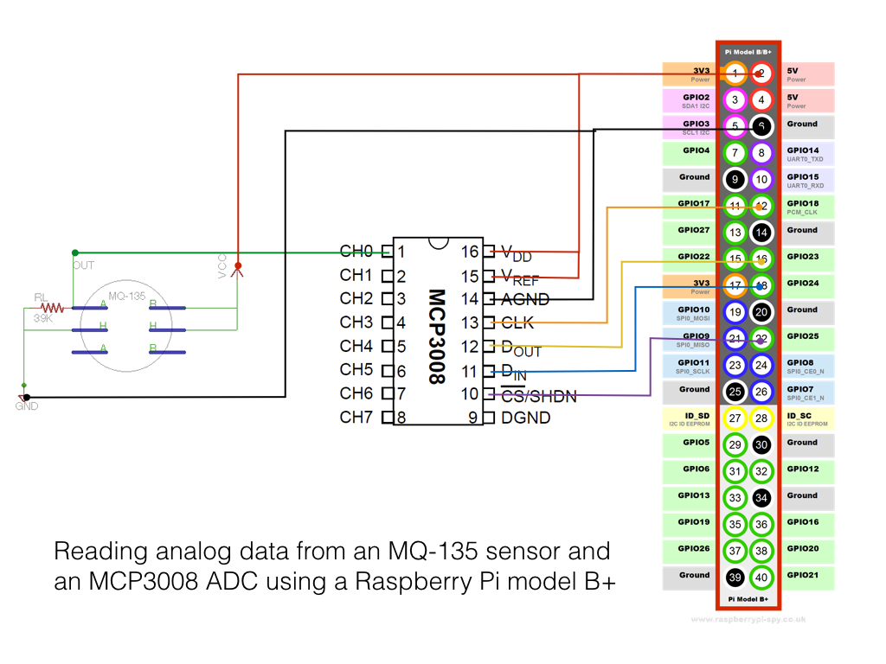
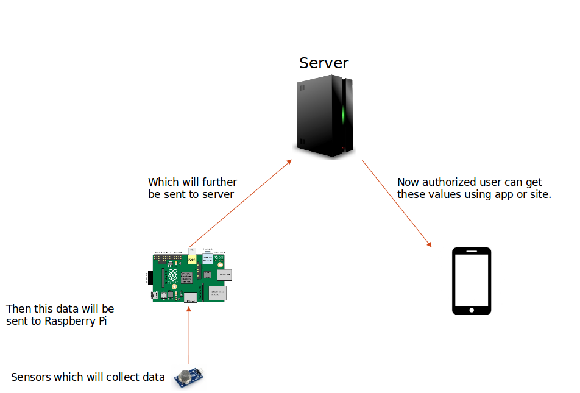

I live in Delhi, which is world's most polluted city. We face several problems related to it in our day to day life. So, basically, we want to design a device, which can help an individual to monitor air quality around them.
A Raspberry Pi is a full fledged computer. It has a real processor, real RAM, real GPU, similar to what smartphones have these days. It comes with a separate distribution of Linux that can run on it as an OS. For this project we have used raspbian OS, which is quite easy to use. It can run apps, play videos, listen to music on it. It outputs to a monitor and takes input from a mouse and a keyboard. It also provides GPIO pins (General Purpose Input Output) that can take inputs and give outputs, in electrical forms.
We used raspberry pi due to its ease of use. It contained everything which we needed for our project. The coding for controlling GPIO is done in python, which is not hard to learn. Also this was a one-time investment, and raspberry pi can be used in many other experiment projects.
The MQ-135 is a hazardous gas sensor used for air quality control and is suitable for detecting NH3 (Ammonia), NOx, alcohol, Benzene, smoke, CO2, etc. You can see data sheet of MQ135 Sensor here.
MQ 135 sensor produces output in analog form, so there is a need to convert this analog signal to digital signal. For our project we have used MCP3004 ADC.

